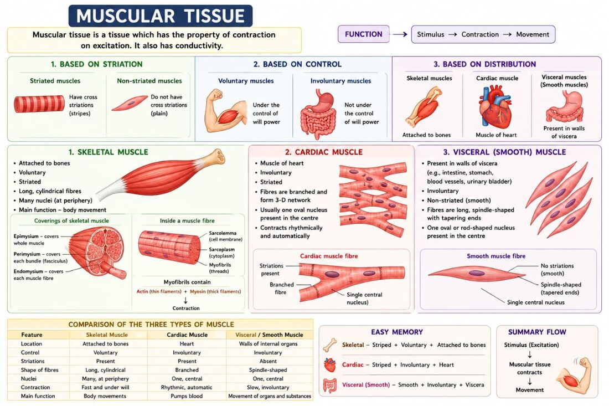
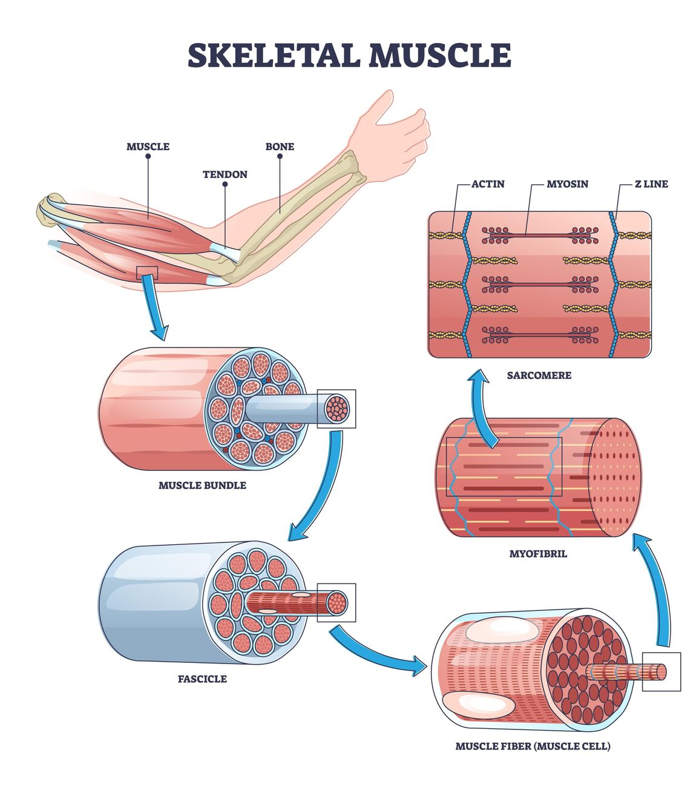
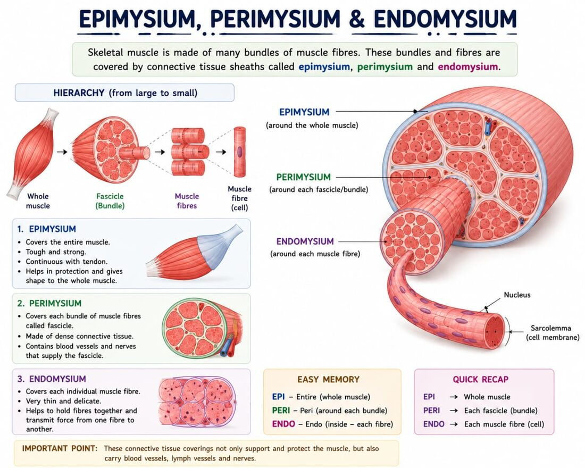
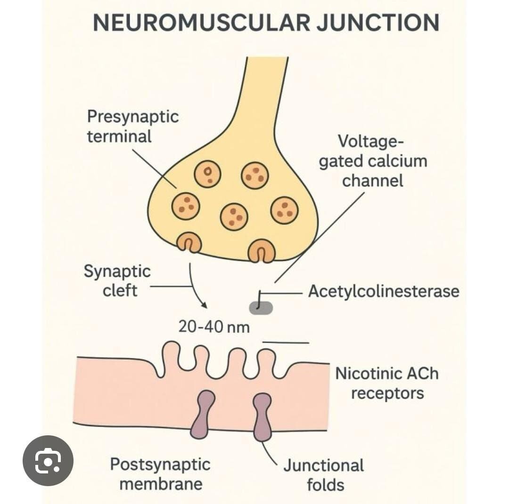
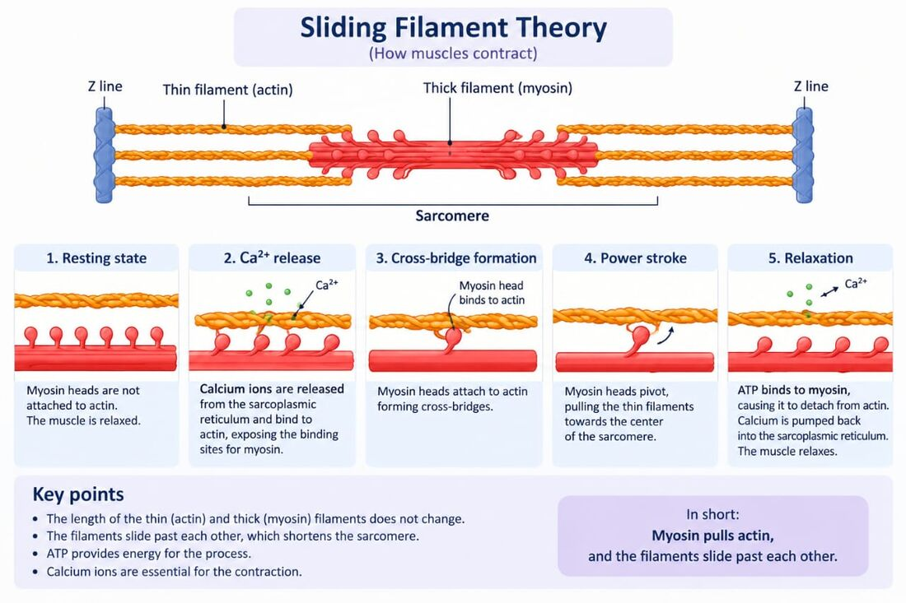
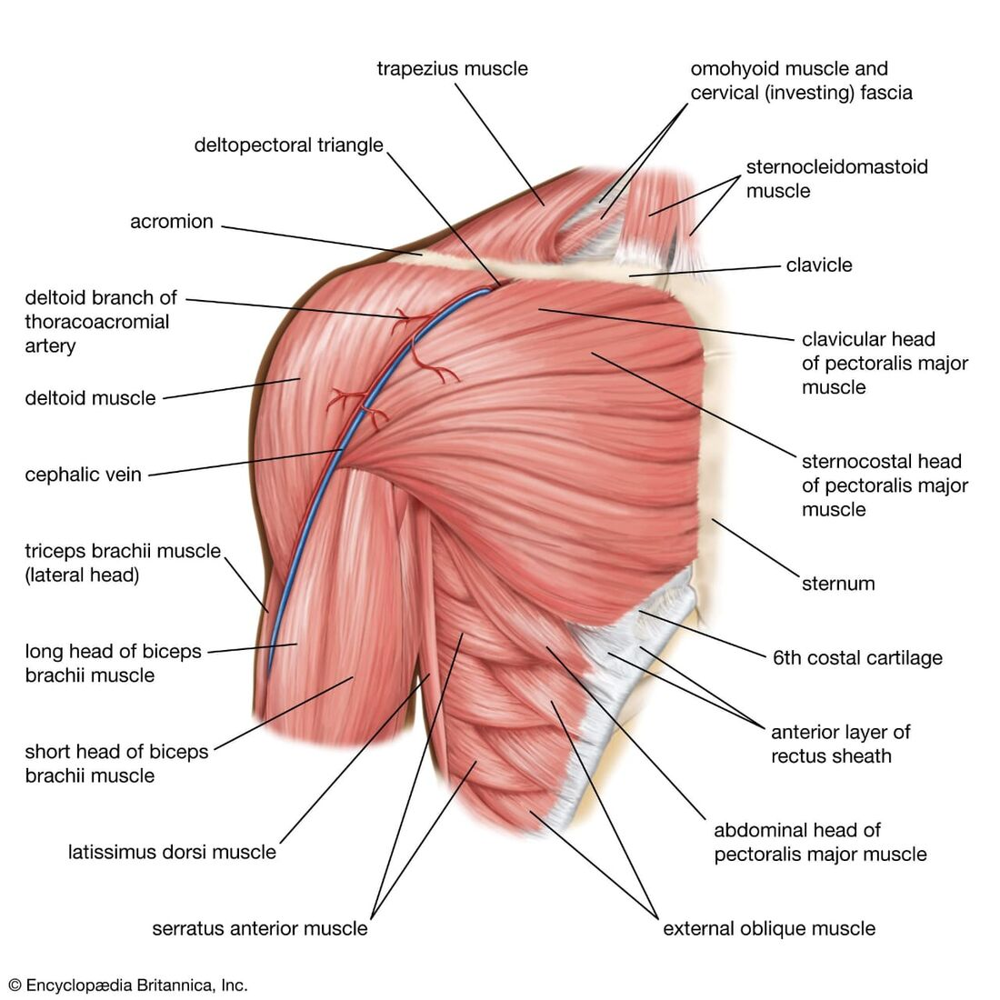
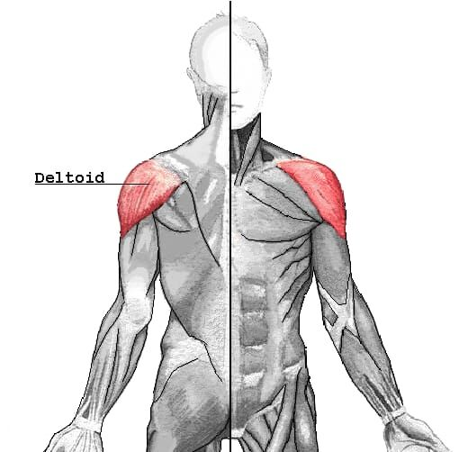

Concept map: see it all at a glance →
Muscular System: Types and Properties
Three kinds of muscle tissue, one shared ability: to shorten and pull.
| Your syllabus line | Where it is on this page |
|---|---|
| Muscular system: skeletal, smooth, cardiac muscles | 1 (comparison), 2 (skeletal structure), 4 (smooth and cardiac) |
| Muscle contraction | 3 (neuromuscular junction, sliding filament), 5 (types of contraction, tone), 6 (fibre types, energy) |
| Muscle fatigue | 7 |
| Biomechanics | 8 (torque, levers, length-tension, force-velocity, muscle roles) |
| Exercise physiology: musculo-skeletal system in yogic practices | 9 |

- Skeletal muscle – attached to bones by tendons; striated; voluntary; long multinucleate fibres.classPDF
- Smooth muscle – walls of hollow organs and vessels; non-striated; involuntary; spindle cells.classPDF
- Cardiac muscle – heart wall only; striated; involuntary; branched cells joined by intercalated discs.classPDF
- Memory line – skeletal moves the body, smooth moves things inside the body, cardiac pumps blood.PDF
| Feature | Skeletal | Smooth | Cardiac |
|---|---|---|---|
| Location | Attached to bones | Walls of hollow organs, vessels | Heart wall (myocardium) |
| Control | Voluntary (somatic) | Involuntary (autonomic) | Involuntary, rhythmic |
| Striations | Striated | Non-striated | Striated |
| Cell shape | Long cylinders | Spindle-shaped | Short, branched |
| Nuclei | Many, at the edge | One, central | One (sometimes two), central |
| Special feature | Motor units, NMJ | Gap junctions; dense bodies; stretch well | Intercalated discs, automaticity (SA node) |
| Speed and fatigue | Fast, forceful, tires | Slow, sustained, tire-resistant | Rhythmic, continuous, very fatigue-resistant |
1AProperties and functions of muscle
| Property | Meaning | Example |
|---|---|---|
| Excitability | Responds to a stimulus (nerve impulse) | Deciding to lift the armPDF |
| Contractility | Develops tension and force | Biceps shortens lifting a dumbbellPDF |
| Extensibility | Can be stretched | Hamstrings lengthen in forward bendPDF |
| Elasticity | Returns towards resting length | Over-stretching can damagePDF |
- Functions of skeletal muscle: produce movement, maintain posture, stabilise joints, produce heat, support and protect soft tissue.PDF
- The four properties are highly relevant to asana practice (Yoga & Human Body notes): stretch uses extensibility, return uses elasticity.general
E-C-E-E: “Excite, Contract, Extend, Elastic-back.” Skeletal 3 S: Striated, Somatic (voluntary), Several nuclei.added
Structure of Skeletal Muscle
From the whole muscle to one sarcomere: wrappers, fibres, filaments.
2AFrom whole muscle down to the sarcomere

- Whole muscle (e.g. biceps) – wrapped in epimysium; joins bone through a tendon.PDF
- Fascicle (bundle) – wrapped in perimysium; carries vessels and nerves between bundles.PDF
- Muscle fibre (a muscle cell) – wrapped in endomysium; long, cylindrical, multinucleate, striated.PDF
- Myofibril – long thread inside the fibre with repeating sarcomeres.PDF
- Sarcomere – contractile unit from Z disc to Z disc; thick (myosin) and thin (actin) filaments.PDF
- Myofilaments – actin (thin) and myosin (thick) proteins.PDF
- Epi = upon → Entire muscle.
- Peri = around → each fascicle (bundle).
- Endo = within → each single fibre.
- All three are continuous with each other and with the tendon, so force travels towards the bone.PDF
- They also carry blood vessels and nerves into the muscle.PDF

2BInside a muscle fibre
| Part | Description |
|---|---|
| Sarcolemma | Plasma membrane of the fibre; carries the electrical signalPDF |
| Sarcoplasm | Cytoplasm: mitochondria, glycogen, myoglobin, myofibrilsPDF |
| Myoglobin | Stores and supplies oxygen to the fibrePDF |
| Mitochondria | Make most ATP by aerobic metabolismPDF |
| Sarcoplasmic reticulum (SR) | Stores and releases calciumPDF |
| T-tubules | Inward extensions of the sarcolemma that carry the signal deep into the fibrePDF |
| Tendon | Strong connective tissue joining muscle to bone and transmitting forcePDF |
| Sarcomere part | What it is | During contraction |
|---|---|---|
| Z disc | Boundary; anchors the thin filaments | Z discs move closer |
| A band | Length of the thick filaments (dark) | Stays the same |
| I band | Thin filaments only (light) | Narrows |
| H zone | Centre of the A band, thick filaments only | Narrows (may vanish) |
Z discs closer; I and H narrow; A unchanged. Remember “A = Always the same”. And I = thin (I is a thin letter), A = whole thick filament length.PDFadded
A rope is made of strands, the strands of threads, and the threads of fibres; pulling the rope works because every level is bound together. A muscle is built the same way, with a wrapper (epimysium, perimysium, endomysium) at each level. When thousands of tiny sarcomere units each shorten a little in a chain, the whole muscle shortens a lot. A muscle can only pull: the filaments pull towards the centre and cannot push anything away, which is why bones need pairs of muscles on opposite sides.
Source note. The Ch. 2 scan (R. Gopinath, Sports Science) describes this structure with different spellings (“fascia or epimysium”, “fasciculus”); and it says only about 50% of cross-bridges are in contact at a time. Both sources agree with the layering above.general
Muscle Contraction: NMJ and Sliding Filament Theory
How a nerve impulse becomes a pull: the most-asked topic of the unit.
3ANeuromuscular junction (NMJ)

- Presynaptic terminal – end of the motor neuron with vesicles of acetylcholine (ACh).classPDF
- Synaptic cleft – tiny gap (about 20–50 nm).classPDF
- Motor end plate (post-synaptic) – folded part of the sarcolemma with ACh receptors.classPDF
- Acetylcholinesterase – enzyme in the cleft that breaks ACh down and ends the signal.PDF
- NMJ = how the nerve talks to a skeletal muscle fibre: electrical → chemical → electrical.PDF
| NMJ sequence | Event |
|---|---|
| 1 | Nerve impulse reaches the axon terminal; voltage-gated Ca²⁺ channels open |
| 2 | Ca²⁺ enters; vesicles release ACh into the cleft |
| 3 | ACh crosses and binds receptors on the motor end plate |
| 4 | Na⁺ enters; end-plate potential; if big enough, a muscle action potential starts |
| 5 | AChE breaks down ACh; signal ends |
3BSliding filament theory (very important)
- Class note: “very imp, must ask for exam”. Thin filaments slide over thick filaments; neither filament shortens.class

| Step | What happens |
|---|---|
| 1 | Nerve impulse reaches the neuromuscular junction; ACh is released |
| 2 | ACh binds the motor end plate; the sarcolemma depolarises (muscle action potential) |
| 3 | The action potential spreads along the sarcolemma and down the T-tubules |
| 4 | The sarcoplasmic reticulum releases Ca²⁺ |
| 5 | Ca²⁺ binds troponin; tropomyosin moves off the myosin-binding sites on actin |
| 6 | Myosin heads (charged by ATP) bind actin: cross-bridges |
| 7 | Power stroke: the myosin head pivots and pulls the thin filament to the centre; ADP and phosphate released |
| 8 | A new ATP binds, the cross-bridge detaches; ATP hydrolysis re-cocks the head (recovery stroke) |
| 9 | The cycle repeats while Ca²⁺ and ATP are available; the sarcomere shortens |
| 10 | When stimulation stops, Ca²⁺ is pumped back into the SR, tropomyosin re-covers the sites, the muscle relaxes |
3CRelaxation
- Stimulation stops, ACh action at the NMJ ends, calcium release from the SR falls.class
- Ca²⁺ is actively pumped back into the SR (needs ATP); it leaves troponin; tropomyosin covers the binding sites again; cross-bridges stop; the muscle relaxes.class
- ATP does two jobs: it powers the power stroke and it detaches the head. Without ATP the heads stay stuck (rigor).general
Think of a rowing crew. The oars are the myosin heads, the water is the actin. Calcium is the coach shouting “row” and removes a cover that was hiding the water. Each oar pulls (power stroke), lifts out of the water (ATP detaches it), and goes back for the next stroke. The boat (the sarcomere) shortens as every oar pulls together, and nobody rows when the coach stops.
A-C-C-P-D: ACh, Calcium, Cross-bridge, Power stroke, Detach (ATP). Or “Nerve, ACh, Ca, Troponin, Bridge, Pull, ATP-release, Repeat”.added
3DMotor unit and the all-or-none law
- Motor unit = one motor neuron + all the muscle fibres it supplies. Force is graded by recruiting more motor units and by firing rate.PDF
- All-or-none principle: if the stimulus is strong enough to fire the motor neuron, all fibres of that motor unit contract together; if it is too weak, none do.general
- Small motor units (eyes, fingers) give fine control; large ones (thigh) give strong force.general
3EEnergy for contraction (class chapter 2)
- ATP is split by ATPase into ADP + phosphate, releasing energy.general
- ATP is quickly rebuilt from creatine phosphate (CP) + ADP; CP is rebuilt later using energy from the breakdown of glycogen.general
Source note. The Ch. 2 scan writes “creatinine phosphate”; the correct name is creatine phosphate (phosphocreatine). It also states the textbook example that the biceps, deltoid and gastrocnemius are mostly fast fibres; muscles in a real person are mixtures, so treat that as an example, not a rule.
Draw the sarcomere before and after contraction and list the 10 steps (or group them as NMJ → action potential → Ca²⁺ → cross-bridge → power stroke → relaxation). The class notes mark this as a very important question.
Smooth Muscle and Cardiac Muscle
The two involuntary muscles: moving things inside the body, and pumping blood.
4ASmooth muscle
| Feature | Smooth muscle |
|---|---|
| Where | Walls of stomach, intestines, vessels, airways, bladder, uterus, irisPDF |
| Control | Involuntary: autonomic nerves, hormones, local chemicals, stretchPDF |
| Cell | Spindle-shaped, one central nucleus, no sarcomeres, dense bodies (like Z discs)PDF |
| Speed | Slow, sustained, stretches a lot (bladder, stomach, uterus), fatigue-resistantPDF |
| Calcium switch | Ca²⁺ + calmodulin → MLCK phosphorylates myosin; no troponinPDF |
| Single-unit | Gap junctions; contracts as a sheet (gut, uterus, bladder)PDF |
| Multi-unit | Cells controlled one by one (iris, ciliary muscle)PDF |
| Jobs | Peristalsis, vasoconstriction/dilation, bronchoconstriction, bladder (detrusor), labour (myometrium), goosebumps (arrector pili)PDF |
4BCardiac muscle
| Feature | Cardiac muscle |
|---|---|
| Where | Wall of the heart only (myocardium)PDF |
| Cell | Short, branched, striated, one (sometimes two) central nucleus, many mitochondriaPDF |
| Intercalated discs | Join cells: fascia adherens (force), desmosomes (strong attachment), gap junctions (electrical spread)PDF |
| Automaticity | SA node (pacemaker) starts each beat; nerves only speed or slow itPDF |
| Conduction path | SA node → atrial muscle → AV node (delay) → AV bundle → bundle branches → Purkinje fibres → ventriclesPDF |
| Contraction | Ca²⁺ enters from outside, triggers more release from the SR (calcium-induced calcium release); troponin-basedPDF |
| Long refractory period | Prevents tetanus so the heart can relax and fillPDF |
| Cardiac output | Heart rate × stroke volume (70 × 70 mL = 4,900 mL/min)PDF |
- You cannot directly control smooth muscle; yoga may influence it indirectly through breathing, relaxation and autonomic activity.PDF
- Slow breathing and relaxation can raise parasympathetic influence and lower heart rate in some people; they do not control each heartbeat.PDF
- Do not say yoga strengthens cardiac muscle the way resistance training strengthens skeletal muscle; adapt practice in heart or lung disease.PDF
Muscle Tone and Types of Contraction
Tone keeps the body ready; contraction types describe what the muscle does in a movement.
5AMuscle tone
- Tone = continuous, low-level, involuntary contraction present even at rest. Not every fibre is strongly contracted; small groups fire in relays, so no group tires.PDFgeneral
- Maintained by the stretch (myotatic) reflex: muscle spindles sense length, the spinal cord fires back a little contraction; gamma motor neurons tune the spindle.general
- Functions: posture, joint stability, balance, readiness for movement, venous return, body heat.PDFgeneral
| Tone state | Meaning | Cause |
|---|---|---|
| Normal | Right tension for posture and movement | |
| Hypotonia | Abnormally low; floppy, poor posture; loose to passive movement | Lower motor neuron lesion, spinal shock, deep anaesthesia, long bed restPDFgeneral |
| Hypertonia | Abnormally high; stiff, resists passive movement | Upper motor neuron lesions (spasticity)PDFgeneral |
Hypotonia and hypertonia are abnormal tone, not types of contraction. And tone is not the same as contraction: tone is always on at low level at rest; contraction is an active action for movement or holding.PDF
5BIsometric, isotonic and isokinetic contraction
| Isometric | Isotonic: concentric | Isotonic: eccentric | Isokinetic | |
|---|---|---|---|---|
| Muscle length | Same | Shortens | Lengthens under tension | Changes |
| Joint movement | None | Yes | Yes (controlled) | Yes, at constant angular speed |
| Job | Posture, stabilising, holding | Produces movement against resistance | Controls speed, brakes, absorbs shock | Testing, rehabilitation |
| Everyday | Standing, holding a bag | Climbing stairs, rising from a chair | Walking downstairs, sitting down slowly | Dynamometer only |
| Yogaclass | Holding virabhadrasana II, vrikshasana, plank | Rising from a squat-like pose | Lowering slowly into a squat; lowering in chaturanga | Not typical in asanas |
Iso-metric = same length; iso-tonic = same tension (but length changes); iso-kinetic = same speed. Concentric = Come together (shorten); Eccentric = Extends (lengthens). Both make force.PDFadded
Picture lowering a heavy bag onto the floor: your biceps are lengthening while still pulling, to stop the bag from crashing down. That is eccentric work, and it is why you can lower more weight than you can lift (see force-velocity in section 8).general
Fibre Types, Energy Systems and Heat
Why some muscles tire and others do not, and what fuels each kind of effort.
6ASlow and fast fibres
| Slow-twitch (Type I, red) | Fast-twitch (Type II, white) | |
|---|---|---|
| Speed | Slow contraction, low myosin ATPase | 2–3 times faster; fast Ca²⁺ releasegeneral |
| Energy | Aerobic; many large mitochondria, much myoglobin (red) | Anaerobic glycolytic (“fast glycolytic”); little myoglobin (white)general |
| Fatigue | Resists fatigue; endurance | Tires quickly; short, powerful burstsgeneral |
| Used for | Posture, long holds, distance running | Sprints, jumps, forceful movesgeneral |
| Genetics | About 13–60% of a muscle is slow (fixed by genes); elite sprinters about 74% fast, distance runners about 75% slowgeneral |
Source note. The Ch. 2 scan names the biceps, deltoid, gastrocnemius and latissimus dorsi as mostly fast, and soleus, semitendinosus, vastus lateralis, rectus abdominis and rectus femoris as mostly slow. Textbooks differ on this (many place rectus femoris and vastus lateralis as mixed), and the exact mix varies person to person, so use it only as the book's example.
6BThree energy systems
| System | Fuel | Speed and duration | Example |
|---|---|---|---|
| ATP-PCr (phosphagen) | Stored ATP + creatine phosphate | Instant; seconds | Jump-through, a quick burstPDF |
| Anaerobic glycolysis | Glycogen → lactic acid, no oxygen | About 10 seconds to 2 minutes | Strong prolonged hold, fast vinyasaPDF |
| Aerobic (oxidative) | Carbohydrate and fat with oxygen | Long duration, lower power | Most yoga practicePDF |
6COxygen deficit, oxygen debt, treppe, heat
| Term | Meaning |
|---|---|
| Oxygen deficit | Oxygen needed in hard exercise that could not be taken in during itgeneral |
| Oxygen debt | Extra oxygen taken in above resting level during recovery after hard exercisegeneral |
| Treppe (staircase) | A rested muscle gives stronger twitches over the first few repeated stimuli, due to warming and metabolic productsgeneral |
| Heat in contraction | Activation heat (Ca²⁺ release), shortening heat (cross-bridge work), relaxation heat (lowering a weight), delayed (recovery) heat (after the work, with oxygen)general |
Your body has three fuel tanks. A small tank of instant fuel (ATP-PCr) for a sprint; a medium tank (glycogen without oxygen) for a hard minute or two, but it makes tiring by-products; and a huge slow-burning tank (aerobic) that is the engine for most of a yoga class. The oxygen debt is just the breathing you do afterwards to refill the first two.
Muscle Fatigue
Why a working muscle eventually weakens, and how to delay it.
7AWhat fatigue is and why it happens
- Muscle fatigue = a reduction in the ability to produce force during or after prolonged or intense activity; it recovers with rest.PDF
- Signs: reduced strength and endurance, trembling, poor coordination, tiredness.PDF
| Cause | Explanation |
|---|---|
| Energy depletion | ATP, creatine phosphate and glycogen run lowPDF |
| Metabolic by-products | Hydrogen ions and phosphate build up and weaken the contraction. The old “lactic acid” explanation is now seen as more complexPDF |
| Low oxygen delivery | Demand outruns supply; fatigue can still occur when oxygen is enoughPDF |
| Dehydration | Loss of water and electrolytesPDF |
| Electrolyte imbalance | Na⁺, K⁺, Ca²⁺ needed for nerves and contractionPDF |
| Prolonged or intense work | Force falls graduallyPDF |
7BPeripheral vs central fatigue
| Peripheral | Central | |
|---|---|---|
| Where | In the muscle (and sometimes the NMJ) | Brain and spinal cord: lower nerve drive |
| Problem | Energy, ion balance, Ca²⁺ release, NMJ transmission | Reduced signal to the muscles |
| Example | Cannot lift the same weight again after heavy lifting | Difficulty keeping pace in a long run |
7CFatigue vs soreness (DOMS)
| Fatigue | Muscle soreness (DOMS) |
|---|---|
| Drop in ability to make force | Pain or tenderness in muscle |
| During or just after exercise | Starts hours later (peaks 24–72 h) after intense or new exercise, especially eccentricgeneral |
| Improves with rest | Improves over a few days |
| Prevention | Why |
|---|---|
| Rest and sleep | Recovery |
| Nutrition (carbohydrate, protein, fat) | Energy, repair |
| Hydration + electrolytes | Contraction and nerve function |
| Warm-up | Prepares muscle and heart |
| Gradual progression | Adaptation |
Yoga: holding plank or chaturanga for a long time fatigues the arms, shoulders and abdominals; modify or rest when alignment is lost. Seek medical advice for unusual weakness, chest pain, severe muscle pain or dark urine after intense exercise.PDF
Biomechanics: Torque, Levers and Muscle Roles
The muscle pulls, the bone is the bar, the joint is the pivot.
Muscle = engine, bone = bar, joint = pivot. The muscle can only pull, by shortening; the filaments pull towards the centre and cannot push. So for any joint there are pairs of muscles that pull opposite ways: one bends (flexor), one straightens (extensor).
8ATorque: the see-saw rule
- Force = a push or pull. Torque = turning effect of a force around a joint = force × moment arm (perpendicular distance from the joint to the line of the force).PDF
- See-saw: a child sitting far from the middle can balance a heavy adult sitting near it. Same turning effect, different forces. A far push needs little force; a near push needs a lot.added
- The biceps attaches close to the elbow, so its moment arm is short while the weight in the hand is far from the elbow. The muscle must pull with much more force than the weight. If the muscle were attached farther from the joint, it would need less force for the same job.added
8BLevers in the body
| Class | Order | Example | Notes |
|---|---|---|---|
| First | Effort – Fulcrum – Load | Head and neck (atlanto-occipital) | Balance and control of head posturePDF |
| Second | Fulcrum – Load – Effort | Standing on tiptoes (gastrocnemius and soleus through the Achilles tendon) | Mechanical advantage: big load, less effortPDF |
| Third | Fulcrum – Effort – Load | Elbow flexion by biceps | Speed and range at the hand; most limb movementsPDF |
8COther biomechanical ideas
| Idea | Meaning |
|---|---|
| Length-tension | Muscle makes most force at an optimal length (good filament overlap); too short or too long gives lessPDF |
| Force-velocity | Concentric: the faster it shortens, the less force. Eccentric: can resist more force than it can produce concentrically (you can lower a heavier dumbbell than you can lift)PDF |
| Agonist | Prime mover (biceps in a curl)PDF |
| Antagonist | Opposes or controls (triceps)PDF |
| Synergist | Assists (brachialis, brachioradialis)PDF |
| Stabiliser | Holds a joint steady (rotator cuff)PDF |
| Open kinetic chain | Hand or foot free: seated knee extension, biceps curlPDF |
| Closed kinetic chain | Hand or foot fixed on a surface: squat, push-up, plankPDF |
| Parallel fibres | Fibres along the muscle; long shortening range (sartorius)PDF |
| Pennate fibres | Fibres at an angle to the tendon; more force for the size (rectus femoris, gastrocnemius)PDF |
| Dumbbell curl phase | What happens |
|---|---|
| Concentric | Elbow flexion; biceps, brachialis shorten |
| Hold | Isometric |
| Eccentric | Lowered slowly; flexors lengthen under tension |
| Roles | Agonist biceps, antagonist triceps, synergists brachialis and brachioradialis, stabilisers shoulder and trunk |
- Examples of pairs: deltoid abducts; pectoralis major and latissimus dorsi adduct.PDF
- Biceps has two heads (long and short) at the shoulder and crosses the elbow.PDF
- More on the shoulder muscles and the rotator cuff is on the Joints page.


- Deltoid: anterior fibres flex, middle fibres abduct, posterior fibres extend the shoulder.PDF
- Fast-twitch example in the Ch. 2 scan; many muscles are mixed.general
“What is biomechanics? Explain levers with examples”: define muscle biomechanics, then torque = force × moment arm, 3 lever classes with the example, length-tension, force-velocity. Exam definition: the study of the mechanical properties of muscles and how they produce force, create and control movement, and contribute to posture and joint stability.PDF
1-2-3 = F-L-E: 1st has Fulcrum in the middle, 2nd has Load in the middle, 3rd has Effort in the middle. Example images: neck (see-saw), tiptoe (wheelbarrow), biceps (fishing rod).added
Muscles in Yogic Practice
Contraction types, energy and adaptations behind asana and pranayama.
| Asana | Muscle role (from your notes) | Contraction type |
|---|---|---|
| Plank | Abdominals stabilise trunk, shoulder muscles support, glutes align pelvis, legs keep alignmentPDF | Mostly isometric |
| Chaturanga Dandasana | Triceps control the elbow; pectoralis major and anterior deltoid support shoulder; trunk keeps alignmentPDF | Eccentric while lowering |
| Virabhadrasana | Quadriceps control the knee, glutes stabilise hips, trunk controls posturePDF | Isometric in the hold |
| Vrikshasana | Standing-leg muscles for balance, hip stabilisers control pelvis, foot and ankle adjust, core stabilisesPDF | Isometric |
| Tadasana | Many muscles together hold posturePDF | Tone and low-level isometric |
| Rising from a squat-like pose | Quadriceps and glutes shortenPDF | Concentric |
9AWhich energy system?
- Brief explosive effort (jump-through) → ATP-PCr. Strong, longer holds or fast vinyasa → anaerobic glycolysis. Most yoga, being low to moderate and sustained → aerobic.PDF
9BAdaptations to regular practice (Q22, muscle half)
- Better motor-unit recruitment and agonist-antagonist coordination: better balance and posture.PDF
- Greater stretch tolerance from sustained holds, through muscle spindle and Golgi tendon organ adaptation, not because the fibres actually lengthen.PDF
- Better proprioception from sustained attention to joint position.PDF
- More muscular endurance and functional strength, especially in postural stabilisers (deep spinal muscles, rotator cuff, hip stabilisers) from repeated isometric and eccentric loading.PDF
- Slow movement + diaphragmatic breathing → more parasympathetic balance, lower resting heart rate and blood pressure.PDF
- Flexibility gains in hip, shoulder and spine with regular practice.PDF
“How asanas and pranayama are good for muscles and bones.” Muscle half: contraction types in asana (isometric holds, eccentric lowering, concentric rising), tone and posture, stretch tolerance, endurance, nervous adaptations. Bone half: see the Skeletal and Joints pages. Add pranayama: diaphragm and intercostal muscles work in breathing, and slow breathing shifts the autonomic balance.
H-L-R for asana muscle work: Hold = isometric, Lower = eccentric, Rise = concentric.added
Sources: class notes 28 Sep–Oct 2026 (typed); The Muscular System (consolidated teacher's PDF, topics 1–7); Chapters 2 and 3 scans (R. Gopinath, Sports Science: fibre types, all-or-none, treppe, oxygen debt, heat); Yoga & Human Body notes; Ross & Wilson ch. 18; Introduction to Kinesiology and Biomechanics; standard texts for “general” tags; question paper Q22. Photographic diagrams are from your diagram folder; the lever and contraction diagrams were drawn for these notes.